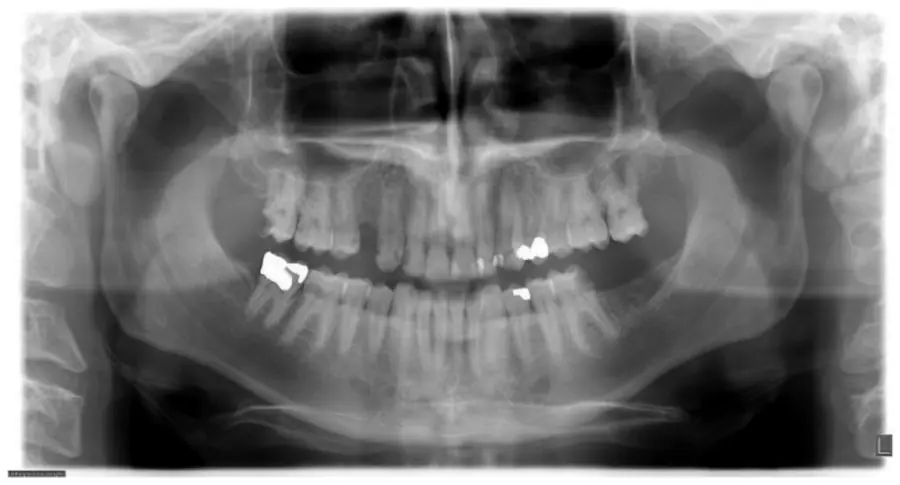
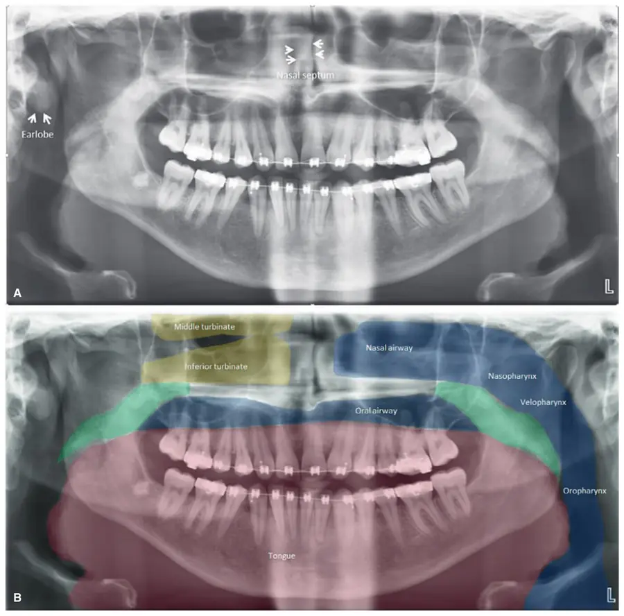

نسخه استخراجشده؛ ترجمه یا تأیید علمی انجام نشده است. وضعیت: captured
یک قاعدهی سهبعدی که همهی تفسیر بر آن میایستد: پانورامیک «یک برش تصویری منحنی از مجموعهی ماگزیلومندیبولار» است، ولی «ضخامتی دارد که باید در نظر گرفته شود». پس دندانپزشک «باید ساختارها را به موقعیت نسبیشان در اسکلت میدفاسیال ربط دهد».

و یک مثال درخشان از همین سهبعدی بودن: «ریجهای ابلیک خارجی و مایلوهیوئید روی پانورامیک عموماً هر دو تیز به نظر میرسند، در حالی که از نظر فیزیکی ریج ابلیک خارجی روی سطح باکال و ریج مایلوهیوئید روی سطح لینگوال مندیبل است — جدا از هم به اندازهی چند میلیمتر.»
و جهتگیری نمایش: «تصویر را طوری ببین که انگار به بیمار نگاه میکنی، با ساختارهای سمت راست بیمار در سمت چپ بیننده» — همان جهتگیری پریاپیکال و بایتوینگ.
و یک نکتهی کلیدی که کمتر گفته میشود — کدام صفحه را میبینی: «در نواحی خلفی، پانورامیک نمای ساژیتال (جانبی) فکها را نشان میدهد، در حالی که در سکستان قدامی نمای کرونال (قدامی-خلفی) را.» پس یک تصویر، دو صفحهی متفاوت.
و حالا دندانها — نقطهی قوت پانورامیک: «یکی از نقاط قوت پانورامیک نمایش کل دندانهاست.» و تفسیر باید «شناسایی همهی دندانهای رویشیافته و در حال تکامل» را در بر بگیرد؛ دندانها از نظر شمار، موقعیت و آناتومی بررسی میشوند؛ و دندانگری موجود شامل پرکردگی کانال، روکش و ترمیمهای ثابت ثبت میشود.
و دو نشانهی وضعیتدهی که مستقیم از دندانها خوانده میشوند: «دندانهای قدامی بیش از حد پهن یا باریک نشاندهندهی بدجایگاهی بیمار در فوکال تراف» است؛ و «دندانهایی که در یک سمت پهنتر از سمت دیگراند نشاندهندهی چرخش صفحهی ساژیتال».
و محدودیت را صادقانه بپذیر: «تفکیک پانورامیک کمتر از رادیوگرافی داخلدهانی است و ممکن است رادیوگرافی داخلدهانی افزوده برای کشف بیماری ظریف لازم باشد.» و بهطور مشخص: «سطوح پروگزیمال پرمولرها اغلب همپوشانی دارند، که در تفسیر پوسیدگی تداخل میکند.»
و مولرهای سوم نهفته توجه ویژه میخواهند: جهتگیری مولرها؛ شمار و پیکربندی ریشهها؛ رابطهی اجزای دندان با ساختارهای حیاتی — کانال مندیبولار، کف و دیوارهی خلفی سینوس ماگزیلاری، توبروزیتی ماگزیلا و دندانهای مجاور؛ و وجود ناهنجاری در استخوان پریکرونال یا پریرادیکولار. ولی «با توجه به ماهیت دوبعدی پانورامیک، چنین یافتههایی ممکن است به تصویربرداری افزوده با CBCT نیاز داشته باشند».
نخست یک تصحیح اصطلاحی: میدفیس «آمیزهی پیچیدهای از استخوانها، حفرههای هوایی و بافتهای نرم» است — تمپورال، زیگوما، مندیبل، فرونتال، ماگزیلا، اسفنوئید، اتموئید، وومر، نازال، شاخکهای بینی و کام. پس «نامیدن ناحیهی میدفاسیال پانورامیک به «ماگزیلا» یک نامگذاری نادرست است».

و هفت جایگاه بررسی میدفیس:
و فیشور پتریگوماگزیلاری اهمیت ویژهای دارد: ظاهرش «قطرهی اشک وارونه» است، و مرز خلفیاش اسپاین پتریگوئید اسفنوئید. و چرا مهم است؟ «موکوسل و کارسینومای سینوس ماگزیلاری بهطور مشخص مرز خلفی ماگزیلا را تخریب میکنند، که بهصورت از دست رفتن مرز قدامی فیشور پتریگوماگزیلاری نمایان میشود.» پس این ناحیه باید در هر دو سمت شناسایی شود.
و سینوس ماگزیلاری — چهار مرز و یک استثنا: هر چهار مرز (خلفی، قدامی، کف، سقف) باید کاملاً با استخوان کورتیکال خطکشیشده، تقریباً متقارن، و از نظر دانسیته قابل مقایسه باشند. ولی «مرز داخلی سینوس ماگزیلاری، که مرز جانبی حفرهی بینی است، روی پانورامیک نمایش داده نمیشود». و «جنبهی خلفی سینوس اوپکتر است بهدلیل سوپرایمپوزیشن زیگوما». و یک یادآوری مهم: «آسیمتری دوطرفه در اندازه، شکل و وجود یا شمار سپتومها یک واریاسیون آناتومیک شایع است.»
و دو رادیولوسنسی که واریانت طبیعیاند و نباید با پاتولوژی اشتباه شوند: پنوماتیزاسیون زائدهی زیگوماتیک ماگزیلا توسط سینوس (رادیولوسنسی بیضوی کورتیکه، گاهی روی ریشهی مولر)، و پنوماتیزاسیون تمپورال توسط سلولهای هوایی ماستوئید که به فوسای گلنوئید ظاهر مولتیلوکولار یا «حباب صابونی» میدهد. و یک اشتباه رایج دیگر: «سوچور زیگوماتیکوتمپورال در میانهی قوس زیگوماتیک است و میتواند شکستگی را تقلید کند.»
و مندیبل — شش جایگاه بررسی: زائدهی کندیلار و TMJ، زائدهی کورونوئید، راموس، تنه و زاویه، سکستان قدامی، دندانها و آلوئول.
و قاعدههای عددی و ساختاری مندیبل:
و چرا خط وسط اوپکتر است؟ سه عامل با هم: برجستگی منتال، شمار بیشتر ترابکولها، تضعیف پرتو هنگام عبور از ستون فقرات گردنی. «بسیاری از دستگاههای امروزی هنگام عبور از ناحیهی ستون گردنی بهطور خودکار عوامل اکسپوز را بالا میبرند؛ با این حال، مقداری اوپسیته عموماً دیده میشود.»
و بافت نرم — آنچه روی پانورامیک اوپک دیده میشود: زبان که زیر کام سخت قوس میزند (تقریباً از یک زاویهی مندیبل تا زاویهی مقابل)، نشانههای لب در میانهی تصویر، کام نرم که از کام سخت روی هر راموس امتداد مییابد، دیوارهی خلفی فارنکس دهانی و بینی، سپتوم بینی، لالههای گوش، بینی، چینهای نازولبیال. و سایههای رادیولوسنت راه هوایی: حفرهی بینی، نازوفارنکس، حفرهی دهان و اوروفارنکس.
و یک اشتباه تشخیصی رایج: «جنبهی فوقانی غضروف تیروئید میتواند با کلسیفیکاسیون عروقی اشتباه شود.» و اپیگلوت خلف دورسوم زبان قرار میگیرد.
و برچسبگذاری اجباری: هر پانورامیک باید سازوکاری برای نشان دادن نام بیمار، تاریخ تولد، سمت راست و چپ، تاریخ معاینه و نام دندانپزشک داشته باشد، بدون پوشاندن ساختارهای آناتومیک. و «هیچ بخشی از تصویر نباید بریده شود تا فیلم در پرونده جا شود».